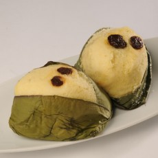

The purpose of this website is to teach people how to bake an ecuadorian snack called quimbolitos.
For this lesson you will need all the ingredients mentioned below
Quimbolitos
made by Melissa Maldonado

What you will need
1/2 cup butter
4 eggs
1.5 cups flour
2 tsp. baking powder
2(8oz)cream cheese
1 cup sugar
2 tsp. cognac
1/2 cups raisin
8 tbsp. milk
canna leavesor aluminum foil
add cream sugar, cream cheese and butter untiil well blended.
add eggs
mix at low speed on electric mixer until blended.
mix together flour and baking powder.
then add to batter mixture. continuing on low speed unil well blended.
put on canna leaves by spoon or foil with a few raisins.